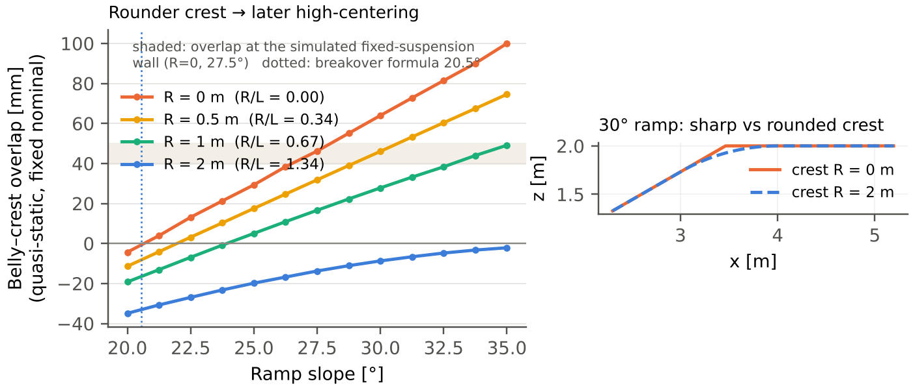
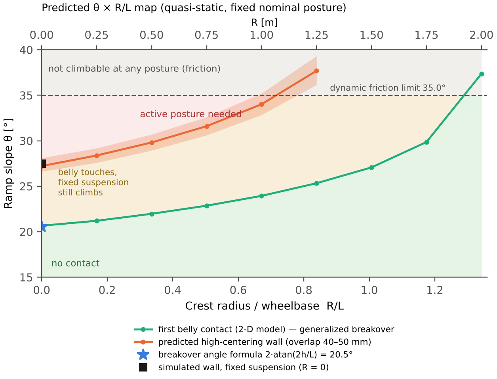

연구 질문 (한 줄) — 급경사 등판에서 배 걸림을 정하는 것은 경사각만이 아니라 크레스트(경사→평지 꺾임부)의 둥근 정도이며, 능동 서스펜션은 어떤 경사 × 크레스트 반경 조합에서만 필요한가?
이전 실험에서 30° 실패의 원인은 견인력이 아니라 기하였습니다. 고정 서스펜션의 차체-지면 접촉 비율은 31 %, 학습 정책은 0 %였고, 35° 이상에서 실패한 이유(마찰 한계 arctan 0.70 = 35.0°)와는 성격이 달랐습니다.
원인이 기하라면 바꿔 봐야 할 변수도 기하입니다. 그런데 지금까지의 실험은 4 m 직선 경사로와 날카로운 정상 모서리 한 가지 형상만 썼습니다. 실제 지형의 볼록 꺾임부는 날카로울 수도, 둥글 수도 있습니다. 크레스트가 충분히 둥글면 고정 서스펜션도 배가 걸리지 않을 수 있고, 그렇다면 능동 서스펜션의 이득은 특정 조건에서만 존재합니다.
이 노트의 기여는 "능동 서스펜션을 강화학습으로 제어했다"가 아닙니다. 그건 이미 여러 연구가 했습니다. 기여는 "배 걸림을 정하는 기하 변수(경사 θ, 크레스트 반경 R, 지상고 h, 휠베이스 L)를 분리하고, 능동 자세 전환이 필요한 영역을 지도로 만드는 것"입니다.
오프로드 차량에는 이미 배 걸림 지표가 있습니다. 브레이크오버 각은 앞뒤 타이어 접지점에서 차체 중앙 최저점까지 그은 두 선이 이루는, 차체 아래로 지나갈 수 있는 봉우리의 최대 각도이고(cars-data), 근사식은 2 × arctan(2 × 지상고 / 휠베이스)입니다(J.D. Power). 정의의 원 출처는 SAE 차량 치수 표준(J689, 현재 J1100)입니다.
| 브레이크오버 각 | 이 연구 | |
|---|---|---|
| 꼭대기 형상 | 날카로운 꼭대기(R = 0)만 | 크레스트 반경 R을 변수로 (R/L = 0~1.3) |
| 판정 기준 | 처음 닿는 순간(정적) | 실제로 멈추는 한계(시뮬레이션으로 보정한 겹침 40~50 mm) |
| 이 로버의 값 | 20.5° | 실제 벽 27.5° (약 7° 차이) |
| 자세 변화 | 고정 차량 하나의 값 | 능동 자세 전환이 넓히는 영역을 지도에 표시 |
차량 쪽 자료도 공표 브레이크오버 값은 정적 이상값이며 서스펜션 굴신과 관성이 실제 상황을 바꾼다고 적고 있습니다(cars-data). 20.5°와 27.5°의 차이가 바로 그 부분이고, 이 연구는 그 차이를 수치로 다룹니다.
로버를 바퀴 두 개(반경 0.215 m)와 그 사이 강체 차체로 단순화하고, 차체 하부 돌출부(평지 지상고 0.135 m)가 휠베이스 중앙에 있다고 가정해 경사로를 따라 준정적으로 이동시켰습니다. 각 위치에서 차체 하부가 지면 아래로 들어가는 깊이(겹침)의 최댓값을 계산했습니다.
모델 검증: R = 0에서 이 모델이 계산한 "처음 닿는 경사"는 20.7°로, 브레이크오버 각 공식값 20.5°와 0.2° 안에서 일치합니다. 공식은 바퀴를 점으로 보고 모델은 바퀴 반경을 넣었으므로 작은 차이는 예상 범위입니다. 그다음 기준(멈춤 = 겹침 40~50 mm)은 R = 0 시뮬레이션 결과 하나로만 맞췄고, 나머지 R은 예측입니다.

| 크레스트 반경 R (R/L) | 처음 닿는 경사 | 겹침 40~50 mm에 이르는 경사 (예상 벽) | 35°에서의 겹침 |
|---|---|---|---|
| 0 m (0) | 20.7° (공식 20.5°) | 26.6~28.1° (시뮬레이션 27.5°) | 100 mm |
| 0.5 m (0.34) | 22.0° | 28.9~30.7° | 75 mm |
| 1 m (0.67) | 23.9° | 32.8~35.2° | 49 mm |
| 1.25 m (0.84) | 25.3° | 36.1~39.3° (마찰 한계 위) | — |
| 2 m (1.34) | 37.4° (마찰 한계 위) | 없음 | −2 mm |

| 항목 | 설정 | 이유 |
|---|---|---|
| 크레스트 반경 | 0, 0.5, 1, 2 m | 기하 예측의 전환점(약 1 m)을 양쪽에서 감쌈. R/L로 함께 보고 |
| 경사 | 25~35°, 2.5° 간격 | 배 걸림 벽(27.5°)부터 마찰 한계(35°)까지. 37.5° 이상은 마찰로 모두 0 %라 제외 |
| 제어기 ① | 고정 기본 자세 | 학습이 없어 결과가 정책에 좌우되지 않음 → 지도의 주 근거 |
| 제어기 ② | 최적 고정 자세(heave 1.0) | "그냥 높이만 올리면 되는가"에 대한 답 |
| 제어기 ③ | PPO, 크레스트 반경을 섞어 재학습 | 날카로운 크레스트로만 학습한 정책을 둥근 크레스트에 쓰면 일반화 문제가 섞이므로, R을 무작위로 섞어 다시 학습 |
| 평가 | 조건당 832 에피소드 | 성공률 50 % 부근 95 % 신뢰구간 약 ±3.4 %p |
| 지표 | 성공률, 차체-지면 접촉 비율, 크레스트에서 네 바퀴 하중 합, 통과 시간 | 성공률이 같아도 실패 원인(배 걸림 vs 미끄러짐)을 구분 |
예상 비용: 지형 생성 코드 수정 반나절, 고정 자세 평가 40회(약 3.5시간), PPO 재학습 시드 3개(약 7시간)와 평가 20회(약 2시간). 노트북 GPU(RTX 4060) 기준 이틀 밤이면 됩니다.
| 위험 | 왜 위험한가 | 대응 |
|---|---|---|
| "둥글면 쉬운 건 당연하다" | 방향만 보이면 기여가 없어 보임 | 방향이 아니라 전환 반경(R*)을 수치로 제시하고, 기하 예측(Fig. C1)과 시뮬레이션이 맞는지 비교. 예측이 맞으면 설계식이 되고, 틀리면 그 차이가 분석 거리 |
| "브레이크오버 각으로 이미 알려진 것" | 배 걸림 기하 지표가 이미 표준에 있음 | 서론에서 먼저 정의·인용하고, 모델이 R = 0에서 공식값(20.5°)을 재현함을 검증으로 제시. 기여를 공식이 다루지 않는 실제 멈춤 한계(+7°)와 크레스트 반경으로 한정 |
| 정책 일반화 문제 | 날카로운 크레스트로만 학습한 정책은 둥근 크레스트가 처음 보는 지형 | 지도의 주 근거는 학습이 없는 고정 자세. PPO는 R을 섞어 재학습해서 비교 |
| 시드 의존성 | 35°에서 PPO 성공률이 시드마다 35~88 %로 갈렸음 | PPO는 시드 3개 이상, 평균 ± 편차 보고. 결론은 고정 자세 결과에 기대고 PPO는 보조로 |
| 실제 지형 형상 근거 부족 | "실제 크레이터 테두리가 R = 몇 m냐"를 묻기 쉬움 | 절대값 대신 R/L(휠베이스 대비)로 결과를 제시해, 지형 자료가 생기면 바로 대입할 수 있게 함 |
| 강체 지형 | 레골리스 침하가 없음 | 배 걸림은 기하 현상이라 강체에서도 성립. 한계로 명시하고, 결론을 "필요조건"으로 표현 |
| 돌출부 위치 가정 | 기하 예측이 이 가정에 민감 | 확인 완료: 최저점을 중앙에 두면 R = 0 벽 27.3°(실측 27.5°), 앞뒤 끝(−0.20 / +0.25 m)에 두면 29.1° / 31.7°. collider 확인에서 높이 0.135 m 바닥이 x = −0.20~+0.25 m에 걸쳐 중앙을 포함하므로, 가장 먼저 닿는 중앙 가정이 맞고 실측과도 일치 |
ARS 심사 방식(저널 적합성 · 방법론 · 도메인 · 관점 · Devil's Advocate)으로 계획 단계를 점검했습니다. 실험 전이라 증거 항목은 계획 기준으로 판단했습니다.
| 기준 | 판정 | 근거 |
|---|---|---|
| 독창성 | MEETS | 기존 지표(브레이크오버 각)는 날카로운 꼭대기·첫 접촉만 정의하고, 기존 로버 연구는 일정한 경사나 단일 경사로 형상만 다룸. 크레스트 반경과 실제 멈춤 한계를 함께 다룬 지도는 찾지 못함 |
| 방법 엄밀성 | MEETS | 학습 없는 고정 자세가 주 근거, 기하 예측과 시뮬레이션의 교차 확인, 조건당 832 에피소드 |
| 증거 충분성 | PARTLY_MEETS | 실험 전. R 4단계 × 경사 5단계면 지도는 그려지지만 전환점 근처 해상도는 추가 조건이 필요할 수 있음 |
| 논리 일관성 | MEETS | "30° 실패 원인은 기하 → 기하 변수를 바꿔 본다"로 질문이 이전 결과에서 바로 이어짐 |
| 중요성·영향 | MEETS | 경로 계획에 쓸 수 있는 형태(θ × R/L 지도)로 결과가 나옴 |
| 국내 학회 적합성 | MEETS | 시뮬레이션 기반 분석 + 설계 지침, 2~4쪽 분량에 맞음 |
판정: 실험이 계획대로 끝나면 Minor revision 수준에서 게재 가능으로 봅니다. 가장 강한 반론은 "브레이크오버 각으로 이미 아는 것 아니냐"와 "둥글면 쉬운 건 당연하다"이고, 답은 ① 공식(첫 접촉 20.5°)과 실제 멈춤(27.5°)의 차이, ② 전환 반경 R*(예측 R/L ≈ 0.72)의 수치, ③ 기하 예측과 시뮬레이션의 일치 여부입니다. 실험 결과가 기하 예측과 크게 다르면 논문의 중심이 "왜 다른가(동적 효과)"로 옮겨 가야 합니다.
| 질문 | 답 |
|---|---|
| 둥글면 쉬운 건 당연하지 않나? | 방향은 당연하지만, 얼마나 둥글어야 하는지는 알려져 있지 않았습니다. 이 연구는 그 전환 반경을 R/L로 제시하고 기하 모델로 예측까지 합니다. |
| 브레이크오버 각이랑 뭐가 다른가? | 브레이크오버 각은 날카로운 꼭대기에서 처음 닿는 각입니다(이 로버 20.5°). 실제로 멈춘 것은 27.5°였고, 둥근 크레스트는 공식에 아예 없습니다. 이 연구의 모델은 R = 0에서 공식값을 재현하면서 그 두 가지로 확장합니다. |
| 강화학습이 왜 필요한가? | 지도의 주 근거는 학습이 없는 고정 자세입니다. PPO는 "자세를 바꿀 수 있으면 영역이 얼마나 넓어지는가"를 보는 상한 기준으로만 씁니다. |
| 실제 크레이터 테두리는 R이 얼마인가? | 결과를 휠베이스 대비 R/L로 줬기 때문에, 지형 자료에서 크레스트 곡률을 재면 바로 대입할 수 있습니다. 실제 분포 조사는 이 논문의 범위 밖입니다. |
| 강체 지형인데 실제와 같나? | 배 걸림은 차체와 지형의 기하로 정해지는 현상이라 강체에서도 성립합니다. 다만 침하가 있으면 지상고가 줄어 벽이 낮아질 수 있으므로 결과를 필요조건으로 씁니다. |
| 2-D 기하 모델을 왜 믿나? | R = 0 시뮬레이션 결과로 기준 하나만 보정하고, 나머지 R은 예측으로 둔 뒤 시뮬레이션으로 확인합니다. 맞으면 설계식, 다르면 동적 효과의 크기를 보여 주는 근거가 됩니다. |
| 로버가 바뀌면? | L(휠베이스), h(지상고), r(휠 반경)만 바꾸면 같은 기하 모델로 다시 예측할 수 있습니다. |
03의 수치는 2-D 준정적 기하 계산이며, R = 0의 27.5° 벽만 Isaac Sim 5.0 + Isaac Lab 시뮬레이션 실측값입니다. 실물 로버·토양 시험 결과가 아닙니다. 출처: 브레이크오버 각 정의·근사식 — cars-data.com, J.D. Power (원 정의: SAE J689 / J1100). 마지막 업데이트 2026.11.13 (계획 단계, 브레이크오버 각 비교 추가).